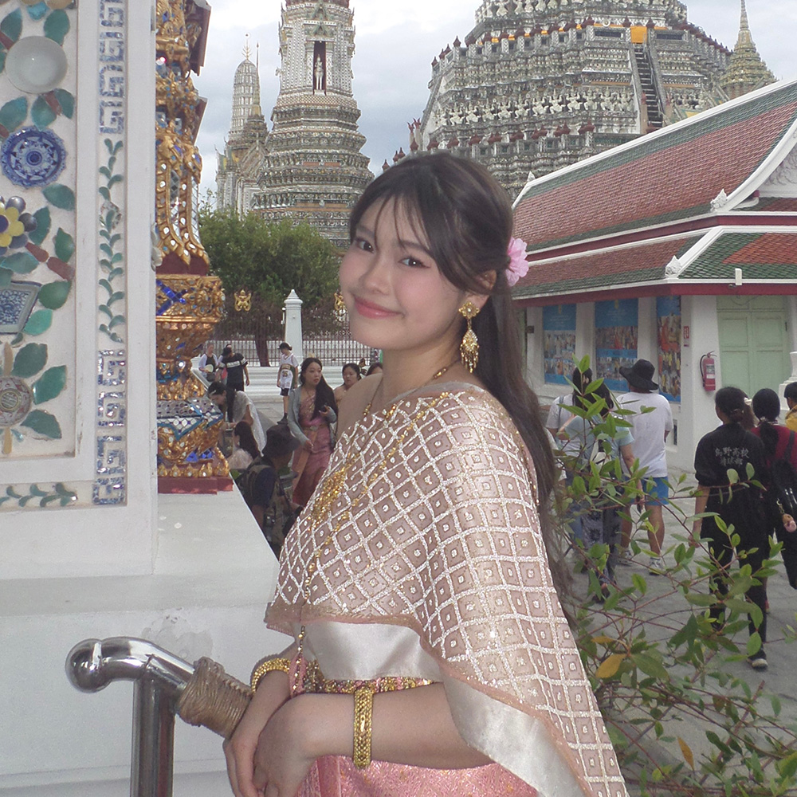
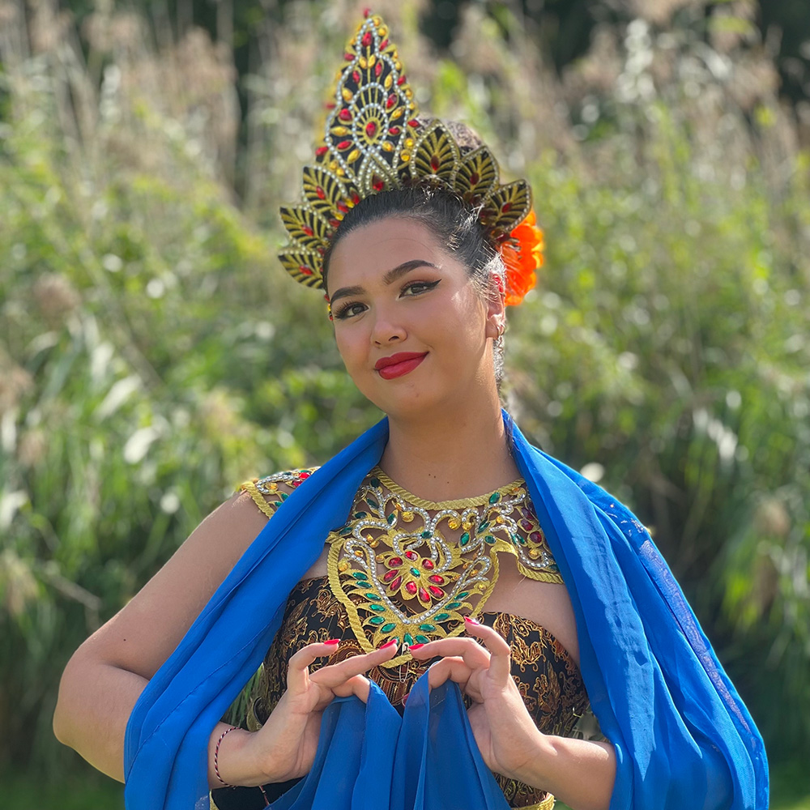

Over ons
Wij zijn drie meiden met verschillende Aziatische roots, maar een gemeenschappelijke ervaring van opgroeien
tussen culturen. In deze podcast stap je in de wereld van Thailand en Indonesië. We delen verhalen over onder andere,
de cultuur, de omstreek, het eten en nog veel meer. Dus stap gauw in onze tuktuk en luister mee naar onze verhalen.”
 Koekie Duijn
Koekie Duijn
Ik ben half Thais, half Nederlands. Ik ben geboren in Nederland en ben opgegroeid in Thailand vanaf mijn derde.
Na 16 jaar in Thailand keerde ik op mijn 19e terug naar Nederland.In mijn podcast deel ik verhalen over mijn jeugd in
Thailand en de aanpassing aan Nederland, tussen twee culturen.

Cartoon Sattayarangsan
Ik ben volledig Thais, geboren in Thailand en verhuisde op mijn 14e naar Nederland. In mijn podcast deel ik mijn
ervaringen van het opgroeien in Thailand en de uitdagingen die ik tegenkwam toen ik me moest aanpassen aan het leven in Nederland.

Dewi Tollenaar
Ik ben opgegroeid in Nederland en ben half Indonesisch, half Nederlands. Thuis spreek ik zowel Indonesisch als Nederlands.
Ik heb Indonesië al vaak bezocht en deel in mijn podcast mijn ervaringen met beide culturen en mijn band met het land van mijn afkomst.
Wat maakt ons uniek?
Persoonlijke verhalen
Onze podcast is uniek omdat we de verhalen delen van drie meiden die opgroeiden in Thailand en Indonesië en later naar Nederland verhuisden.
We praten over het leven tussen twee culturen, de uitdagingen van het aanpassen aan Nederland, en hoe we onze identiteit vinden.
Eerlijkheid en humor
Wat ons bijzonder maakt, is dat we eerlijk en met humor vertellen over de schoonheid en de moeilijkheden van het combineren van deze werelden.
We delen onze ervaringen met cultuurshock, het zoeken naar een nieuw thuis, en het behouden van onze roots terwijl we ons aanpassen aan het leven in Nederland.
Diversiteit
Onze podcast is voor iedereen die tussen verschillende culturen leeft of nieuwsgierig is naar wat het betekent om tussen twee werelden te zijn.
We hopen anderen te inspireren om trots te zijn op hun eigen verhaal en de diversiteit van culturen te omarmen.
Deel je verhaal!
Heb je ook een verhaal over even tussen culturen?
Deel het met ons, we horen graag van je!
Stuur een mail